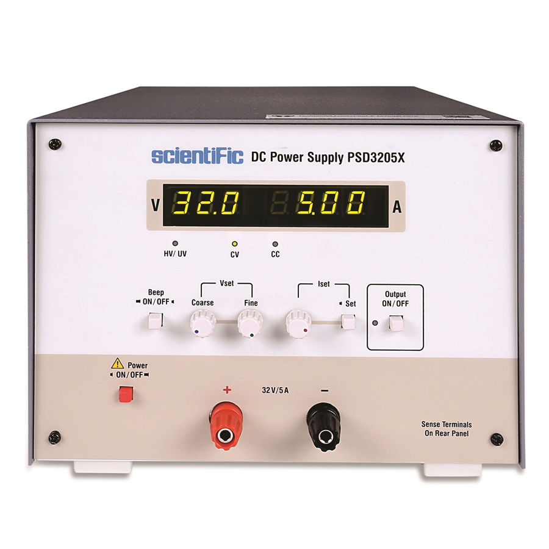

Kelompok
| Nama Kelompok | Anggota Kelompok |
|---|---|
| KELOMPOK 7 | • Salman Sagara (31) • Teonathan Deon (32) • Varis Tofano (33) • Venus Alvino (34) • Wika Airlangga (35) |
Pembukaan
Power supply merupakan salah satu komponen penting dalam dunia elektronik. Alat ini berfungsi untuk mengubah sumber daya listrik dari bentuk arus bolak-balik (AC) menjadi arus searah (DC) yang dibutuhkan oleh banyak perangkat elektronik. Dalam proyek ini, kami merancang sebuah power supply yang dapat memberikan tegangan yang stabil, sehingga perangkat yang menggunakannya dapat bekerja dengan optimal.
Pengertian Power Supply
Power supply adalah perangkat yang menyediakan daya listrik dalam bentuk tertentu, seperti tegangan dan arus, yang dibutuhkan oleh perangkat elektronik. Secara umum, power supply mengubah sumber daya listrik, yang biasanya berupa arus bolak-balik (AC), menjadi arus searah (DC). Dengan adanya power supply yang baik, perangkat elektronik akan mendapatkan daya yang stabil dan aman digunakan.
Foto Produk Power Supply
Skema Rangkaian Power Supply

Deskripsi Proyek
Proyek ini bertujuan untuk merancang sebuah power supply yang mampu mengubah tegangan AC menjadi DC. Proses ini dilakukan dengan menggunakan beberapa komponen penting seperti transformator, dioda, kapasitor, dan resistor. Dengan rangkaian ini, tegangan yang dihasilkan dapat stabil dan sesuai dengan yang dibutuhkan perangkat elektronik.
Alat dan Bahan
| Alat | Bahan |
|---|---|
| Multimeter | Transformator CT |
| Obeng | Dioda |
| Solder | Kapasitor |
| Lem Tembak | Tenol |
| bor | Kabel PCB |
| Gergaji | particleBoard |
| kikir atau ukir | Box X6 |
| Papan PCB | |
| Resistor | |
| Saklar Rotary 2 Sisi | |
| Switch On/Off | |
| Lampu LED | |
| Baut |
Cara Pembuatan
Untuk membuat power supply ini, pertama-tama kami mempersiapkan alat dan bahan yang dibutuhkan. Setelah itu, langkah-langkahnya adalah sebagai berikut:
- Siapkan Box LaLu lubangilah Sesuai Degan ukuran Switch, kabel input, dan Saklar Rotary.
- Rangkailah Komponent Komponent diatas Papan PCB Lalu Pasanglah particleBoard pada Papan PCB.
- pasang Rangkaian Kedalam Box Yag Sudah Di Persiapkan.
- Periksa hasil sambungan menggunakan multimeter untuk memastikan semuanya berfungsi dengan baik.
- Uji Coba Rangkaian Secara Hati Hati.
Penutupan
Setelah melalui beberapa tahap pembuatan dan pengujian, kami berhasil membuat power supply yang dapat mengubah tegangan AC menjadi DC dengan stabil. Proyek ini memberikan banyak pembelajaran tentang bagaimana komponen elektronik bekerja bersama-sama dalam rangkaian. Kami berharap proyek ini dapat bermanfaat, tidak hanya bagi kami, tetapi juga bagi orang lain yang membutuhkannya. Terima kasih kepada semua pihak yang telah membantu dan mendukung kami dalam menyelesaikan proyek ini.